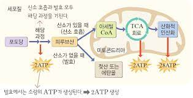

호흡
외호흡: 폐의 폐포와 모세혈관 사이에 산소와 이산화탄소가 교환되는것
내호흡: 폐에서 혈액으로 들어온 산소는 혈관을 따라 온몸의 조직 세포로 운반되며 모세혈관과 조직세포 사이에서 산소와 이산화탄소가 교환된다. 조직세포에서는 산소를 이용하여 영양소를 분해하며 에너지를 얻는다. 이때 이산화탄소가 나오는
세포호흡: 유기호흡& 무기호흡(부패, 발 )
유기호흡
-생명체가 생명활동을 하기 위해 유기물을 분해하여 필요한 에너지(ATP)를 얻는 과정
-세포호흡 장소: 세포질 기질, 미토콘트리아
-호흡기질: 유기물(탄수화물, 단백질, 지방), 주로 포도당(C6H12O6)
-이화반응, 산화반응, 발열반응
C6H12O6 + 6O2 + 6H2O → 6CO2 + 12H2O + 38ATP + 열에너지

해당작용
세포질에서 총 2ATP,2NADH2 형성
산소가 필요하지 않음
탈수소효소+조효소(NAD) 사용
효소가 기질에 작용해 ATP 생성하므로 기질 수준 인산화에 속함
TCA 회로
미토콘드리아 기질에서 총 2ATP, 8NADH2, 2FADH2 형성
탈수소효소, 탈탄산효소 사용
산화적 일산화
산소호흡을 하는 진핵세포의 미토콘드리아나 원핵세포에서 고에너지 전자를 이용하여 수소 농도 차를 만든 후 ATP 합성 효소를 작동시켜 ADP와 인산으로부터 ATP를 합성하는 과정
발효
-미생물이 자신이 가지고 있는 효소를 이용해 유기물을 분해시키는 과정
-발효 반응과 부패 반응은 비슷한 과정에 의해 진행되지만 우리의 생활에 사용되는 물질이 만들어지면 발효라 하고 악취가 나거나 유해한 물질이 만들어지만 부패라 함
-무산소 호흡의 일
과정
-유기물을 완전히 분해하지 못하고 다른 종류의 유기물로 생성
-발생하는 에너지의 양이 적음
종류
알코올 발효
젖산 발효
효모
-효모에 의한 발효중 이산화탄소가 생성
-효모는 당을 에탄올과 이산화탄소로 분해함
-곰팡이류로 무성생식
참고문헌
생물생리학,언영명외 12명, 도서출판 아카데미
생명과학(개념과 현상의 이해), 님 캠밸 외 3명, 바이오 사이언스